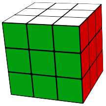
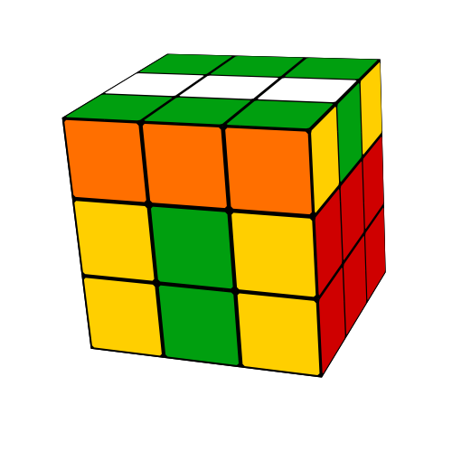

Rubik’s Cube Example¶
Note
This example can be done in 5-10 minutes on a laptop or in GitHub Codespaces (See README).
The Rubik’s Cube¶


We will be using DeepXube to solve the Rubik’s Cube. The Rubik’s Cube is a 3x3x3 cube consisting of six faces and 54 stickers, where each face has 9 stickers. Each face can be moved 90 degrees clockwise or counterclockwise for a total of 12 actions. There are approximately \(4.3 \times 10^{19}\) possible states (i.e. sticker permutations).
Visualizing States¶
cube3 is the name for the Rubik’s Cube domain.
You can see the solved Rubik’s Cube using:
deepxube viz --domain cube3 --steps 0
Since states are generated by starting from the solved cube and taking actions, increasing the number of steps will increase the number of times the cube is scrambled:
deepxube viz --domain cube3 --steps 100
This command will produce an image of the cube. You can click and drag it to rotate it. You can also interact with the terminal to take actions.
Tip
If you are doing this exercise using a remote machine and cannot see the rendered image,
then you can save the image as a .png using the --o <file> argument.
deepxube viz --domain cube3 --steps 100 --o img.png
Generating Problem Instances¶
The maximum number actions required to solve the Rubik’s cube with 90 degree face turns is 26 [Rok14]. With 12 actions for each state, in the worst case, a brute force search would require generating \(12^{26}\)(\(\approx 1.1 \times 10^{28}\)) states. Therefore, we will create “easy” problem instances for brute-force search and “hard” problem instances for deep reinforcement learning and batch-weighted A* search.
mkdir tutorial
mkdir tutorial/cube3/
deepxube problem_inst --domain cube3 --step_min 2 --step_max 3 --num 10 --file tutorial/cube3/easy.pkl --redo
deepxube problem_inst --domain cube3 --step_min 1000 --step_max 10000 --num 10 --file tutorial/cube3/hard.pkl --redo
Visualizing Generated Problem Instances¶
To visualize and interact with the generated problem instances, use:
deepxube viz --domain cube3 --file tutorial/cube3/easy.pkl --idx 5
--idx is the index of the problem instance in the file.

Note
Your visualizations may look different since problem instances are randomly generated.
Brute Force Search¶
We will use uniform-cost search to solve problem instances. We can achieve this by performing A* search with a heuristic function that is always zero. By not giving any file for the heuristic function, DeepXube automatically uses this always-zero heuristic function.
deepxube solve --domain cube3 --heur_type V --pathfind graph_v.1B_1.0W --file tutorial/cube3/easy.pkl --results tutorial/cube3/results_brute_easy/ --redo
This should result in solving all 10 instances with an average path cost of about 2.5 and an average solve time of about 0.1 seconds:
Cube3()
GraphSearchHeurNodeActsEnum(batch_size=1, weight=1.0, eps=0.0)
State: 0, SolnCost: 2.00, # Nodes Gen: 372, Itrs: 31, Itrs/sec: 9738.85, Solved: True, Time: 0.00
Times - root: 0.00, heur: 0.00, pop: 0.00, is_solved: 0.00, goal: 0.00, expand: 0.00, nodes: 0.00, up_inst: 0.00, filt: 0.00, cost: 0.00, pushpop: 0.00, edges_next: 0.00, set_next: 0.00, Tot: 0.00, num_itrs: 31
Means - SolnCost: 2.00, # Nodes Gen: 372.00, Itrs: 31.00, Itrs/sec: 9738.85, Solved: 100.00%, Time: 0.00
State: 1, SolnCost: 3.00, # Nodes Gen: 11,844, Itrs: 987, Itrs/sec: 8434.60, Solved: True, Time: 0.12
Times - root: 0.00, heur: 0.00, pop: 0.00, is_solved: 0.01, goal: 0.00, expand: 0.03, nodes: 0.04, up_inst: 0.00, filt: 0.01, cost: 0.01, pushpop: 0.00, edges_next: 0.00, set_next: 0.00, Tot: 0.11, num_itrs: 987
Means - SolnCost: 2.50, # Nodes Gen: 6108.00, Itrs: 509.00, Itrs/sec: 9086.73, Solved: 100.00%, Time: 0.06
State: 2, SolnCost: 3.00, # Nodes Gen: 2,256, Itrs: 188, Itrs/sec: 11213.76, Solved: True, Time: 0.02
Times - root: 0.00, heur: 0.00, pop: 0.00, is_solved: 0.00, goal: 0.00, expand: 0.01, nodes: 0.00, up_inst: 0.00, filt: 0.00, cost: 0.00, pushpop: 0.00, edges_next: 0.00, set_next: 0.00, Tot: 0.02, num_itrs: 188
Means - SolnCost: 2.67, # Nodes Gen: 4824.00, Itrs: 402.00, Itrs/sec: 9795.74, Solved: 100.00%, Time: 0.05
State: 3, SolnCost: 2.00, # Nodes Gen: 360, Itrs: 30, Itrs/sec: 11240.76, Solved: True, Time: 0.00
Times - root: 0.00, heur: 0.00, pop: 0.00, is_solved: 0.00, goal: 0.00, expand: 0.00, nodes: 0.00, up_inst: 0.00, filt: 0.00, cost: 0.00, pushpop: 0.00, edges_next: 0.00, set_next: 0.00, Tot: 0.00, num_itrs: 30
Means - SolnCost: 2.50, # Nodes Gen: 3708.00, Itrs: 309.00, Itrs/sec: 10156.99, Solved: 100.00%, Time: 0.03
State: 4, SolnCost: 2.00, # Nodes Gen: 696, Itrs: 58, Itrs/sec: 9674.67, Solved: True, Time: 0.01
Times - root: 0.00, heur: 0.00, pop: 0.00, is_solved: 0.00, goal: 0.00, expand: 0.00, nodes: 0.00, up_inst: 0.00, filt: 0.00, cost: 0.00, pushpop: 0.00, edges_next: 0.00, set_next: 0.00, Tot: 0.01, num_itrs: 58
Means - SolnCost: 2.40, # Nodes Gen: 3105.60, Itrs: 258.80, Itrs/sec: 10060.53, Solved: 100.00%, Time: 0.03
State: 5, SolnCost: 3.00, # Nodes Gen: 3,156, Itrs: 263, Itrs/sec: 10523.77, Solved: True, Time: 0.02
Times - root: 0.00, heur: 0.00, pop: 0.00, is_solved: 0.00, goal: 0.00, expand: 0.01, nodes: 0.00, up_inst: 0.00, filt: 0.00, cost: 0.00, pushpop: 0.00, edges_next: 0.00, set_next: 0.00, Tot: 0.02, num_itrs: 263
Means - SolnCost: 2.50, # Nodes Gen: 3114.00, Itrs: 259.50, Itrs/sec: 10137.74, Solved: 100.00%, Time: 0.03
State: 6, SolnCost: 2.00, # Nodes Gen: 600, Itrs: 50, Itrs/sec: 10740.86, Solved: True, Time: 0.00
Times - root: 0.00, heur: 0.00, pop: 0.00, is_solved: 0.00, goal: 0.00, expand: 0.00, nodes: 0.00, up_inst: 0.00, filt: 0.00, cost: 0.00, pushpop: 0.00, edges_next: 0.00, set_next: 0.00, Tot: 0.00, num_itrs: 50
Means - SolnCost: 2.43, # Nodes Gen: 2754.86, Itrs: 229.57, Itrs/sec: 10223.90, Solved: 100.00%, Time: 0.03
State: 7, SolnCost: 2.00, # Nodes Gen: 1,368, Itrs: 114, Itrs/sec: 10732.66, Solved: True, Time: 0.01
Times - root: 0.00, heur: 0.00, pop: 0.00, is_solved: 0.00, goal: 0.00, expand: 0.00, nodes: 0.00, up_inst: 0.00, filt: 0.00, cost: 0.00, pushpop: 0.00, edges_next: 0.00, set_next: 0.00, Tot: 0.01, num_itrs: 114
Means - SolnCost: 2.38, # Nodes Gen: 2581.50, Itrs: 215.12, Itrs/sec: 10287.49, Solved: 100.00%, Time: 0.02
State: 8, SolnCost: 3.00, # Nodes Gen: 7,548, Itrs: 629, Itrs/sec: 6729.08, Solved: True, Time: 0.09
Times - root: 0.00, heur: 0.00, pop: 0.00, is_solved: 0.00, goal: 0.00, expand: 0.02, nodes: 0.04, up_inst: 0.00, filt: 0.01, cost: 0.01, pushpop: 0.00, edges_next: 0.00, set_next: 0.00, Tot: 0.09, num_itrs: 629
Means - SolnCost: 2.44, # Nodes Gen: 3133.33, Itrs: 261.11, Itrs/sec: 9892.11, Solved: 100.00%, Time: 0.03
State: 9, SolnCost: 2.00, # Nodes Gen: 1,128, Itrs: 94, Itrs/sec: 10101.06, Solved: True, Time: 0.01
Times - root: 0.00, heur: 0.00, pop: 0.00, is_solved: 0.00, goal: 0.00, expand: 0.00, nodes: 0.00, up_inst: 0.00, filt: 0.00, cost: 0.00, pushpop: 0.00, edges_next: 0.00, set_next: 0.00, Tot: 0.01, num_itrs: 94
Means - SolnCost: 2.40, # Nodes Gen: 2932.80, Itrs: 244.40, Itrs/sec: 9913.01, Solved: 100.00%, Time: 0.03
Tip
An output file is saved in output.txt in the results directory.
Trying to solve the hard instances with brute force search will most likely result in your computer will running out of memory. To set a time limit so this does not happen:
deepxube solve --domain cube3 --heur_type V --pathfind graph_v.1B_1.0W --file tutorial/cube3/hard.pkl --results tutorial/cube3/results_brute_hard/ --redo --time_limit 10
This should result in no instances being solved:
Cube3()
GraphSearchHeurNodeActsEnum(batch_size=1, weight=1.0, eps=0.0)
State: 0, SolnCost: inf, # Nodes Gen: 948,696, Itrs: 79058, Itrs/sec: 7905.73, Solved: False, Time: 10.00
Times - root: 0.00, heur: 0.13, pop: 0.23, is_solved: 0.61, goal: 0.04, expand: 3.54, nodes: 2.13, up_inst: 0.33, filt: 0.88, cost: 0.68, pushpop: 0.59, edges_next: 0.07, set_next: 0.04, Tot: 9.29, num_itrs: 79058
Means - SolnCost: 0.00, # Nodes Gen: 0.00, Itrs: 0.00, Itrs/sec: 0.00, Solved: 0.00%, Time: 0.00
State: 1, SolnCost: inf, # Nodes Gen: 926,160, Itrs: 77180, Itrs/sec: 7442.95, Solved: False, Time: 10.37
Times - root: 0.00, heur: 0.12, pop: 0.21, is_solved: 0.55, goal: 0.04, expand: 3.62, nodes: 1.66, up_inst: 0.29, filt: 0.80, cost: 0.62, pushpop: 1.66, edges_next: 0.07, set_next: 0.04, Tot: 9.67, num_itrs: 77180
Means - SolnCost: 0.00, # Nodes Gen: 0.00, Itrs: 0.00, Itrs/sec: 0.00, Solved: 0.00%, Time: 0.00
State: 2, SolnCost: inf, # Nodes Gen: 858,564, Itrs: 71547, Itrs/sec: 7154.64, Solved: False, Time: 10.00
Times - root: 0.00, heur: 0.11, pop: 0.20, is_solved: 0.53, goal: 0.04, expand: 2.75, nodes: 1.76, up_inst: 0.53, filt: 0.74, cost: 0.59, pushpop: 1.98, edges_next: 0.06, set_next: 0.03, Tot: 9.33, num_itrs: 71547
Means - SolnCost: 0.00, # Nodes Gen: 0.00, Itrs: 0.00, Itrs/sec: 0.00, Solved: 0.00%, Time: 0.00
State: 3, SolnCost: inf, # Nodes Gen: 898,836, Itrs: 74903, Itrs/sec: 7490.28, Solved: False, Time: 10.00
Times - root: 0.00, heur: 0.11, pop: 0.20, is_solved: 0.52, goal: 0.04, expand: 2.75, nodes: 3.28, up_inst: 0.28, filt: 0.75, cost: 0.59, pushpop: 0.70, edges_next: 0.06, set_next: 0.03, Tot: 9.33, num_itrs: 74903
Means - SolnCost: 0.00, # Nodes Gen: 0.00, Itrs: 0.00, Itrs/sec: 0.00, Solved: 0.00%, Time: 0.00
State: 4, SolnCost: inf, # Nodes Gen: 824,556, Itrs: 68713, Itrs/sec: 6871.28, Solved: False, Time: 10.00
Times - root: 0.00, heur: 0.12, pop: 0.20, is_solved: 0.54, goal: 0.04, expand: 3.22, nodes: 1.29, up_inst: 1.38, filt: 0.76, cost: 0.60, pushpop: 1.06, edges_next: 0.07, set_next: 0.03, Tot: 9.32, num_itrs: 68713
Means - SolnCost: 0.00, # Nodes Gen: 0.00, Itrs: 0.00, Itrs/sec: 0.00, Solved: 0.00%, Time: 0.00
State: 5, SolnCost: inf, # Nodes Gen: 953,256, Itrs: 79438, Itrs/sec: 7601.42, Solved: False, Time: 10.45
Times - root: 0.00, heur: 0.12, pop: 0.22, is_solved: 0.57, goal: 0.04, expand: 3.54, nodes: 2.68, up_inst: 0.30, filt: 0.81, cost: 0.64, pushpop: 0.72, edges_next: 0.07, set_next: 0.04, Tot: 9.74, num_itrs: 79438
Means - SolnCost: 0.00, # Nodes Gen: 0.00, Itrs: 0.00, Itrs/sec: 0.00, Solved: 0.00%, Time: 0.00
State: 6, SolnCost: inf, # Nodes Gen: 898,536, Itrs: 74878, Itrs/sec: 7487.76, Solved: False, Time: 10.00
Times - root: 0.00, heur: 0.11, pop: 0.20, is_solved: 0.51, goal: 0.04, expand: 2.70, nodes: 1.74, up_inst: 0.49, filt: 0.73, cost: 0.58, pushpop: 2.14, edges_next: 0.06, set_next: 0.03, Tot: 9.34, num_itrs: 74878
Means - SolnCost: 0.00, # Nodes Gen: 0.00, Itrs: 0.00, Itrs/sec: 0.00, Solved: 0.00%, Time: 0.00
State: 7, SolnCost: inf, # Nodes Gen: 855,336, Itrs: 71278, Itrs/sec: 7127.80, Solved: False, Time: 10.00
Times - root: 0.00, heur: 0.11, pop: 0.19, is_solved: 0.49, goal: 0.03, expand: 2.98, nodes: 2.52, up_inst: 0.49, filt: 0.70, cost: 0.56, pushpop: 1.20, edges_next: 0.06, set_next: 0.03, Tot: 9.36, num_itrs: 71278
Means - SolnCost: 0.00, # Nodes Gen: 0.00, Itrs: 0.00, Itrs/sec: 0.00, Solved: 0.00%, Time: 0.00
State: 8, SolnCost: inf, # Nodes Gen: 850,500, Itrs: 70875, Itrs/sec: 7074.23, Solved: False, Time: 10.02
Times - root: 0.00, heur: 0.11, pop: 0.18, is_solved: 0.48, goal: 0.03, expand: 2.54, nodes: 3.85, up_inst: 0.26, filt: 0.68, cost: 0.55, pushpop: 0.64, edges_next: 0.06, set_next: 0.03, Tot: 9.40, num_itrs: 70875
Means - SolnCost: 0.00, # Nodes Gen: 0.00, Itrs: 0.00, Itrs/sec: 0.00, Solved: 0.00%, Time: 0.00
State: 9, SolnCost: inf, # Nodes Gen: 875,712, Itrs: 72976, Itrs/sec: 7297.59, Solved: False, Time: 10.00
Times - root: 0.00, heur: 0.11, pop: 0.19, is_solved: 0.50, goal: 0.03, expand: 2.90, nodes: 1.92, up_inst: 0.26, filt: 0.71, cost: 0.56, pushpop: 2.08, edges_next: 0.06, set_next: 0.03, Tot: 9.36, num_itrs: 72976
Means - SolnCost: 0.00, # Nodes Gen: 0.00, Itrs: 0.00, Itrs/sec: 0.00, Solved: 0.00%, Time: 0.00
Visualizing Solutions¶
For the problem instances that were solved, visualizations of the solution can be obtained from the results file. The solution can be manually or automatically stepped through.
deepxube viz --domain cube3 --file tutorial/cube3/results_brute_easy/results.pkl --idx 5 --soln

Tip
A .gif of the solution can be saved by adding --o <file_name>.gif
Tip
results.pkl can be opened in Python using pickle to obtain the actions
for each solution, the states on the solution path, and other
relevant information.
Training a Heuristic Function¶
We will train a heuristic function represented as a deep neural network (DNN). Specifically, the DNN is a deep residual neural network [HZRS16] with two residual blocks, two layers of width 200 per block, and batch normalization [IS15]. Building on approximate value iteration [Bel57, BT96], the DNN will be trained with limited-horizon Bellman-based learning (LHBL) [HAS26].
deepxube train --domain cube3 --heur resnet_fc.200H_2B_bn --heur_type V --pathfind graph_v --step_max 100 --up_itrs 100 --search_itrs 50 --backup -1 --procs 2 --batch_size 200 --max_itrs 5000 --dir tutorial/cube3/models/
--step_max 100 uses 100 steps to generate problem instances. In the Rubik’s Cube domain, this starts from the goal and
takes between 0 and 100 actions to generate a problem instance.
--up_itrs 100 updates the target network every 100 iterations.
--search_itrs 50 performs search for 50 iterations on each generated problem instances. All states expanded during search are
added to the training set.
--backup -1 uses the LHBL training update by backing up the entire search tree.
--procs 2 uses two parallel processes to generate training data.
Important
The product of the number of update steps and batch size should be divisible by the number of search iterations.
Important
Currently, DeepXube expects the given pathfinding algorithm expand exactly one state each iteration. Therefore, batched versions of search cannot currently be used during training.
Training should result in a heuristic function that goes from solving about 3% to about 11% of problem instances during training.
device: cpu, devices: [], on_gpu: False
ResnetFCHeur(
(one_hots): ModuleList(
(0): OneHot()
)
(heur): Sequential(
(0): Linear(in_features=324, out_features=200, bias=True)
(1): ResnetModel(
(blocks): ModuleList(
(0-1): 2 x ModuleList(
(0): FullyConnectedModel(
(layers): ModuleList(
(0): ModuleList(
(0): Linear(in_features=200, out_features=200, bias=True)
(1): BatchNorm1d(200, eps=1e-05, momentum=0.1, affine=True, track_running_stats=True)
(2): ReLU()
)
(1): ModuleList(
(0): Linear(in_features=200, out_features=200, bias=True)
(1): BatchNorm1d(200, eps=1e-05, momentum=0.1, affine=True, track_running_stats=True)
(2): LinearAct()
)
)
)
)
)
(act_fns): ModuleList(
(0-1): 2 x ReLU()
)
)
(2): Linear(in_features=200, out_features=1, bias=True)
)
)
Number of trainable parameters: 227,601
Initializing data buffer with max size 20,000
Input array sizes:
index: 0, dtype: uint8, shape: (54,)
index: 1, dtype: float64, shape: ()
Data buffer initialized. Time: 0.0001747608184814453
UpdateHeurVRLKeepGoal(UpArgs(procs=2, up_itrs=100, step_max=100, search_itrs=50, ub_heur_solns=False, backup=-1, policy_rand_prob=0.0, up_gen_itrs=None, up_batch_size=100, nnet_batch_size=20000, sync_main=False, v=False))
GraphSearchHeurNodeActsEnum(batch_size=1, weight=1.0, eps=0.0)
TrainArgs(batch_size=200, max_itrs=5000, balance_steps=False, rb=0, loss_thresh=inf, targ_up_searches=0, skip_heur=False, skip_policy=False, checkpoint=0, grad_accum=1, display=100)
Cube3()
Getting Data - itr: 0, update_num: 0, targ_update: 0, num_gen: 20,000
Times - steps_gen: 0.03, inst_info: 0.00, inst_add: 0.00, backup: 0.06, get_tr_data: 0.00, to_np: 0.01, update_perf: 0.00, put: 0.01, gc: 0.42, ->get_states: 0.04, ->pathfinding: 3.86, Tot: 4.43
(get_states): sample_goalstate_goal_pairs: 0.00, random_walk: 0.04, Tot: 0.04
(pathfinding): root: 0.00, pop: 0.01, is_solved: 0.02, goal: 0.00, expand: 0.61, nodes: 0.76, up_inst: 0.06, heur: 2.09, filt: 0.18, cost: 0.04, pushpop: 0.07, edges_next: 0.01, set_next: 0.00, Tot: 3.86
Data - %solved: 2.27, path_costs: 0.333, search_itrs: 3.205, cost-to-go (mean/min/max): 1.01/0.00/2.00
Itr: 0, loss: 2.41E+00, targ_ctg: 1.02, nnet_ctg: -0.45, Time: 2.83
Train - itrs: 100, loss: 4.17E-02, targ_updated: True
Times - up_start: 0.01, up_data: 2.49, up_end: 0.32, data_samp: 0.00, train: 0.40, save_net: 0.00, save_status: 0.00, Tot: 3.23
Getting Data - itr: 100, update_num: 1, targ_update: 1, num_gen: 20,000
Times - steps_gen: 0.00, inst_info: 0.00, inst_add: 0.00, backup: 0.06, get_tr_data: 0.00, to_np: 0.01, update_perf: 0.00, put: 0.01, gc: 0.49, ->get_states: 0.05, ->pathfinding: 4.66, Tot: 5.29
(get_states): sample_goalstate_goal_pairs: 0.00, random_walk: 0.05, Tot: 0.05
(pathfinding): root: 0.00, pop: 0.01, is_solved: 0.03, goal: 0.00, expand: 0.76, nodes: 0.55, up_inst: 0.17, heur: 2.68, filt: 0.19, cost: 0.05, pushpop: 0.22, edges_next: 0.01, set_next: 0.00, Tot: 4.66
Data - %solved: 4.08, path_costs: 1.153, search_itrs: 5.600, cost-to-go (mean/min/max): 1.75/0.00/3.00
Itr: 100, loss: 7.00E-01, targ_ctg: 1.76, nnet_ctg: 0.95, Time: 2.86
Train - itrs: 100, loss: 3.39E-02, targ_updated: True
Times - up_start: 0.00, up_data: 2.56, up_end: 0.29, data_samp: 0.00, train: 0.40, save_net: 0.00, save_status: 0.00, Tot: 3.27
Getting Data - itr: 200, update_num: 2, targ_update: 2, num_gen: 20,000
Times - steps_gen: 0.00, inst_info: 0.00, inst_add: 0.00, backup: 0.06, get_tr_data: 0.00, to_np: 0.01, update_perf: 0.00, put: 0.01, gc: 0.48, ->get_states: 0.05, ->pathfinding: 4.68, Tot: 5.29
(get_states): sample_goalstate_goal_pairs: 0.00, random_walk: 0.05, Tot: 0.05
(pathfinding): root: 0.00, pop: 0.01, is_solved: 0.02, goal: 0.00, expand: 0.86, nodes: 0.62, up_inst: 0.07, heur: 2.70, filt: 0.17, cost: 0.05, pushpop: 0.16, edges_next: 0.01, set_next: 0.00, Tot: 4.68
Data - %solved: 4.95, path_costs: 1.943, search_itrs: 7.294, cost-to-go (mean/min/max): 2.55/0.00/3.76
Itr: 200, loss: 7.37E-01, targ_ctg: 2.57, nnet_ctg: 1.73, Time: 2.85
Train - itrs: 100, loss: 4.36E-02, targ_updated: True
Times - up_start: 0.00, up_data: 2.55, up_end: 0.29, data_samp: 0.00, train: 0.41, save_net: 0.00, save_status: 0.00, Tot: 3.26
Getting Data - itr: 300, update_num: 3, targ_update: 3, num_gen: 20,000
Times - steps_gen: 0.00, inst_info: 0.00, inst_add: 0.00, backup: 0.06, get_tr_data: 0.00, to_np: 0.01, update_perf: 0.00, put: 0.01, gc: 0.47, ->get_states: 0.06, ->pathfinding: 4.34, Tot: 4.94
(get_states): sample_goalstate_goal_pairs: 0.00, random_walk: 0.06, Tot: 0.06
(pathfinding): root: 0.00, pop: 0.01, is_solved: 0.02, goal: 0.00, expand: 0.58, nodes: 0.89, up_inst: 0.07, heur: 2.47, filt: 0.15, cost: 0.04, pushpop: 0.09, edges_next: 0.01, set_next: 0.00, Tot: 4.34
Data - %solved: 6.27, path_costs: 1.941, search_itrs: 5.018, cost-to-go (mean/min/max): 3.32/0.00/4.63
Itr: 300, loss: 7.31E-01, targ_ctg: 3.34, nnet_ctg: 2.52, Time: 2.67
Train - itrs: 100, loss: 4.14E-02, targ_updated: True
Times - up_start: 0.00, up_data: 2.37, up_end: 0.28, data_samp: 0.00, train: 0.39, save_net: 0.00, save_status: 0.00, Tot: 3.06
Getting Data - itr: 400, update_num: 4, targ_update: 4, num_gen: 20,000
Times - steps_gen: 0.00, inst_info: 0.00, inst_add: 0.00, update_perf: 0.00, backup: 0.08, get_tr_data: 0.00, to_np: 0.02, put: 0.02, gc: 0.81, ->get_states: 0.07, ->pathfinding: 7.20, Tot: 8.21
(get_states): sample_goalstate_goal_pairs: 0.00, random_walk: 0.07, Tot: 0.07
(pathfinding): root: 0.00, pop: 0.01, is_solved: 0.06, goal: 0.00, expand: 1.77, nodes: 1.02, up_inst: 0.12, heur: 3.62, filt: 0.30, cost: 0.08, pushpop: 0.18, edges_next: 0.02, set_next: 0.01, Tot: 7.20
Data - %solved: 7.71, path_costs: 2.706, search_itrs: 8.527, cost-to-go (mean/min/max): 4.10/0.00/5.50
Itr: 400, loss: 7.11E-01, targ_ctg: 4.10, nnet_ctg: 3.29, Time: 4.41
Train - itrs: 100, loss: 2.90E-02, targ_updated: True
Times - up_start: 0.00, up_data: 4.00, up_end: 0.40, data_samp: 0.00, train: 0.53, save_net: 0.00, save_status: 0.00, Tot: 4.93
Getting Data - itr: 500, update_num: 5, targ_update: 5, num_gen: 20,000
Times - steps_gen: 0.00, inst_info: 0.00, inst_add: 0.00, backup: 0.06, get_tr_data: 0.00, to_np: 0.01, update_perf: 0.00, put: 0.01, gc: 0.51, ->get_states: 0.06, ->pathfinding: 4.62, Tot: 5.27
(get_states): sample_goalstate_goal_pairs: 0.00, random_walk: 0.06, Tot: 0.06
(pathfinding): root: 0.00, pop: 0.01, is_solved: 0.02, goal: 0.00, expand: 0.94, nodes: 0.57, up_inst: 0.07, heur: 2.70, filt: 0.16, cost: 0.05, pushpop: 0.09, edges_next: 0.01, set_next: 0.00, Tot: 4.62
Data - %solved: 7.17, path_costs: 2.463, search_itrs: 4.995, cost-to-go (mean/min/max): 4.86/0.00/6.27
Itr: 500, loss: 7.58E-01, targ_ctg: 4.85, nnet_ctg: 4.05, Time: 2.84
Train - itrs: 100, loss: 5.46E-02, targ_updated: True
Times - up_start: 0.00, up_data: 2.54, up_end: 0.29, data_samp: 0.00, train: 0.40, save_net: 0.00, save_status: 0.00, Tot: 3.25
Getting Data - itr: 600, update_num: 6, targ_update: 6, num_gen: 20,000
Times - steps_gen: 0.00, inst_info: 0.00, inst_add: 0.00, update_perf: 0.00, backup: 0.06, get_tr_data: 0.00, to_np: 0.01, put: 0.01, gc: 0.48, ->get_states: 0.05, ->pathfinding: 4.44, Tot: 5.06
(get_states): sample_goalstate_goal_pairs: 0.00, random_walk: 0.05, Tot: 0.05
(pathfinding): root: 0.00, pop: 0.01, is_solved: 0.02, goal: 0.00, expand: 0.55, nodes: 0.94, up_inst: 0.07, heur: 2.54, filt: 0.16, cost: 0.04, pushpop: 0.09, edges_next: 0.01, set_next: 0.00, Tot: 4.44
Data - %solved: 8.75, path_costs: 3.372, search_itrs: 8.166, cost-to-go (mean/min/max): 5.66/0.00/7.22
Itr: 600, loss: 7.73E-01, targ_ctg: 5.66, nnet_ctg: 4.84, Time: 2.75
Train - itrs: 100, loss: 5.38E-02, targ_updated: True
Times - up_start: 0.00, up_data: 2.43, up_end: 0.31, data_samp: 0.00, train: 0.40, save_net: 0.00, save_status: 0.00, Tot: 3.15
Getting Data - itr: 700, update_num: 7, targ_update: 7, num_gen: 20,000
Times - steps_gen: 0.00, inst_info: 0.00, inst_add: 0.00, backup: 0.06, get_tr_data: 0.00, to_np: 0.01, update_perf: 0.00, put: 0.01, gc: 0.46, ->get_states: 0.05, ->pathfinding: 4.40, Tot: 5.00
(get_states): sample_goalstate_goal_pairs: 0.00, random_walk: 0.05, Tot: 0.05
(pathfinding): root: 0.00, pop: 0.01, is_solved: 0.02, goal: 0.00, expand: 0.54, nodes: 0.93, up_inst: 0.07, heur: 2.52, filt: 0.15, cost: 0.04, pushpop: 0.09, edges_next: 0.01, set_next: 0.00, Tot: 4.40
Data - %solved: 10.05, path_costs: 3.734, search_itrs: 10.651, cost-to-go (mean/min/max): 6.15/0.00/7.95
Itr: 700, loss: 5.24E-01, targ_ctg: 6.11, nnet_ctg: 5.51, Time: 2.71
Train - itrs: 100, loss: 8.92E-02, targ_updated: True
Times - up_start: 0.00, up_data: 2.41, up_end: 0.30, data_samp: 0.00, train: 0.40, save_net: 0.00, save_status: 0.00, Tot: 3.11
Getting Data - itr: 800, update_num: 8, targ_update: 8, num_gen: 20,000
Times - steps_gen: 0.00, inst_info: 0.00, inst_add: 0.00, update_perf: 0.00, backup: 0.05, get_tr_data: 0.00, to_np: 0.01, put: 0.01, gc: 0.50, ->get_states: 0.05, ->pathfinding: 4.43, Tot: 5.06
(get_states): sample_goalstate_goal_pairs: 0.00, random_walk: 0.05, Tot: 0.05
(pathfinding): root: 0.00, pop: 0.01, is_solved: 0.02, goal: 0.00, expand: 0.66, nodes: 0.59, up_inst: 0.24, heur: 2.48, filt: 0.16, cost: 0.04, pushpop: 0.21, edges_next: 0.01, set_next: 0.00, Tot: 4.43
Data - %solved: 9.70, path_costs: 4.228, search_itrs: 11.465, cost-to-go (mean/min/max): 6.90/0.00/8.78
Itr: 800, loss: 6.51E-01, targ_ctg: 6.80, nnet_ctg: 6.10, Time: 2.79
Train - itrs: 100, loss: 1.02E-01, targ_updated: True
Times - up_start: 0.00, up_data: 2.42, up_end: 0.36, data_samp: 0.00, train: 0.42, save_net: 0.00, save_status: 0.00, Tot: 3.20
Getting Data - itr: 900, update_num: 9, targ_update: 9, num_gen: 20,000
Times - steps_gen: 0.00, inst_info: 0.00, inst_add: 0.00, backup: 0.06, get_tr_data: 0.00, to_np: 0.01, update_perf: 0.00, put: 0.01, gc: 0.49, ->get_states: 0.05, ->pathfinding: 4.36, Tot: 4.99
(get_states): sample_goalstate_goal_pairs: 0.00, random_walk: 0.05, Tot: 0.05
(pathfinding): root: 0.00, pop: 0.01, is_solved: 0.02, goal: 0.00, expand: 0.77, nodes: 0.71, up_inst: 0.07, heur: 2.48, filt: 0.16, cost: 0.04, pushpop: 0.09, edges_next: 0.01, set_next: 0.00, Tot: 4.36
Data - %solved: 10.07, path_costs: 4.262, search_itrs: 11.062, cost-to-go (mean/min/max): 7.34/0.00/9.64
Itr: 900, loss: 6.09E-01, targ_ctg: 7.57, nnet_ctg: 6.85, Time: 2.70
Train - itrs: 100, loss: 1.20E-01, targ_updated: True
Times - up_start: 0.00, up_data: 2.40, up_end: 0.30, data_samp: 0.00, train: 0.37, save_net: 0.00, save_status: 0.00, Tot: 3.07
Getting Data - itr: 1000, update_num: 10, targ_update: 10, num_gen: 20,000
Times - steps_gen: 0.00, inst_info: 0.00, inst_add: 0.00, update_perf: 0.00, backup: 0.06, get_tr_data: 0.00, to_np: 0.01, put: 0.01, gc: 0.48, ->get_states: 0.05, ->pathfinding: 4.48, Tot: 5.09
(get_states): sample_goalstate_goal_pairs: 0.00, random_walk: 0.05, Tot: 0.05
(pathfinding): root: 0.00, pop: 0.01, is_solved: 0.02, goal: 0.00, expand: 0.63, nodes: 0.58, up_inst: 0.29, heur: 2.54, filt: 0.16, cost: 0.04, pushpop: 0.18, edges_next: 0.01, set_next: 0.00, Tot: 4.48
Data - %solved: 10.11, path_costs: 4.308, search_itrs: 10.413, cost-to-go (mean/min/max): 7.92/0.00/10.33
Itr: 1000, loss: 3.13E-01, targ_ctg: 7.84, nnet_ctg: 7.42, Time: 2.76
Train - itrs: 100, loss: 9.52E-02, targ_updated: True
Times - up_start: 0.00, up_data: 2.45, up_end: 0.30, data_samp: 0.00, train: 0.38, save_net: 0.00, save_status: 0.00, Tot: 3.13
Getting Data - itr: 1100, update_num: 11, targ_update: 11, num_gen: 20,000
Times - steps_gen: 0.00, inst_info: 0.00, inst_add: 0.00, backup: 0.06, get_tr_data: 0.00, to_np: 0.01, update_perf: 0.00, put: 0.01, gc: 0.50, ->get_states: 0.06, ->pathfinding: 4.46, Tot: 5.10
(get_states): sample_goalstate_goal_pairs: 0.00, random_walk: 0.06, Tot: 0.06
(pathfinding): root: 0.00, pop: 0.01, is_solved: 0.02, goal: 0.00, expand: 0.60, nodes: 0.64, up_inst: 0.22, heur: 2.57, filt: 0.16, cost: 0.04, pushpop: 0.18, edges_next: 0.01, set_next: 0.00, Tot: 4.46
Data - %solved: 11.45, path_costs: 3.990, search_itrs: 7.578, cost-to-go (mean/min/max): 8.44/0.00/11.16
Itr: 1100, loss: 3.71E-01, targ_ctg: 8.37, nnet_ctg: 7.97, Time: 2.76
Train - itrs: 100, loss: 1.97E-01, targ_updated: True
Times - up_start: 0.00, up_data: 2.45, up_end: 0.31, data_samp: 0.00, train: 0.40, save_net: 0.00, save_status: 0.00, Tot: 3.16
Getting Data - itr: 1200, update_num: 12, targ_update: 12, num_gen: 20,000
Times - steps_gen: 0.00, inst_info: 0.00, inst_add: 0.00, backup: 0.06, get_tr_data: 0.00, to_np: 0.01, update_perf: 0.00, put: 0.01, gc: 0.48, ->get_states: 0.05, ->pathfinding: 4.44, Tot: 5.06
(get_states): sample_goalstate_goal_pairs: 0.00, random_walk: 0.05, Tot: 0.05
(pathfinding): root: 0.00, pop: 0.01, is_solved: 0.02, goal: 0.00, expand: 0.70, nodes: 0.70, up_inst: 0.07, heur: 2.54, filt: 0.16, cost: 0.04, pushpop: 0.18, edges_next: 0.01, set_next: 0.00, Tot: 4.44
Data - %solved: 11.31, path_costs: 4.644, search_itrs: 11.337, cost-to-go (mean/min/max): 8.80/0.00/11.67
Itr: 1200, loss: 2.48E-01, targ_ctg: 8.72, nnet_ctg: 8.33, Time: 2.73
Train - itrs: 100, loss: 1.50E-01, targ_updated: True
Times - up_start: 0.00, up_data: 2.43, up_end: 0.30, data_samp: 0.00, train: 0.38, save_net: 0.00, save_status: 0.00, Tot: 3.12
Getting Data - itr: 1300, update_num: 13, targ_update: 13, num_gen: 20,000
Times - steps_gen: 0.00, inst_info: 0.00, inst_add: 0.00, backup: 0.06, get_tr_data: 0.00, to_np: 0.01, update_perf: 0.00, put: 0.01, gc: 0.52, ->get_states: 0.06, ->pathfinding: 4.51, Tot: 5.18
(get_states): sample_goalstate_goal_pairs: 0.00, random_walk: 0.06, Tot: 0.06
(pathfinding): root: 0.00, pop: 0.01, is_solved: 0.02, goal: 0.00, expand: 0.69, nodes: 0.71, up_inst: 0.11, heur: 2.54, filt: 0.17, cost: 0.05, pushpop: 0.20, edges_next: 0.01, set_next: 0.00, Tot: 4.51
Data - %solved: 11.62, path_costs: 4.790, search_itrs: 12.576, cost-to-go (mean/min/max): 8.65/0.00/12.39
Itr: 1300, loss: 3.75E-01, targ_ctg: 8.56, nnet_ctg: 8.47, Time: 2.79
Train - itrs: 100, loss: 2.45E-01, targ_updated: True
Times - up_start: 0.00, up_data: 2.49, up_end: 0.30, data_samp: 0.00, train: 0.38, save_net: 0.00, save_status: 0.00, Tot: 3.18
Getting Data - itr: 1400, update_num: 14, targ_update: 14, num_gen: 20,000
Times - steps_gen: 0.00, inst_info: 0.00, inst_add: 0.00, update_perf: 0.00, backup: 0.06, get_tr_data: 0.00, to_np: 0.01, put: 0.01, gc: 0.47, ->get_states: 0.05, ->pathfinding: 4.32, Tot: 4.92
(get_states): sample_goalstate_goal_pairs: 0.00, random_walk: 0.05, Tot: 0.05
(pathfinding): root: 0.00, pop: 0.01, is_solved: 0.02, goal: 0.00, expand: 0.51, nodes: 0.65, up_inst: 0.17, heur: 2.47, filt: 0.15, cost: 0.04, pushpop: 0.27, edges_next: 0.01, set_next: 0.00, Tot: 4.32
Data - %solved: 9.96, path_costs: 4.094, search_itrs: 8.996, cost-to-go (mean/min/max): 9.23/0.00/12.70
Itr: 1400, loss: 7.30E-01, targ_ctg: 9.36, nnet_ctg: 8.78, Time: 2.66
Train - itrs: 100, loss: 2.57E-01, targ_updated: True
Times - up_start: 0.00, up_data: 2.37, up_end: 0.29, data_samp: 0.00, train: 0.40, save_net: 0.00, save_status: 0.00, Tot: 3.06
Getting Data - itr: 1500, update_num: 15, targ_update: 15, num_gen: 20,000
Times - steps_gen: 0.00, inst_info: 0.00, inst_add: 0.00, backup: 0.06, get_tr_data: 0.00, to_np: 0.01, update_perf: 0.00, put: 0.01, gc: 0.48, ->get_states: 0.05, ->pathfinding: 4.37, Tot: 4.98
(get_states): sample_goalstate_goal_pairs: 0.00, random_walk: 0.05, Tot: 0.05
(pathfinding): root: 0.00, pop: 0.01, is_solved: 0.02, goal: 0.00, expand: 0.49, nodes: 0.84, up_inst: 0.16, heur: 2.50, filt: 0.15, cost: 0.04, pushpop: 0.14, edges_next: 0.01, set_next: 0.00, Tot: 4.37
Data - %solved: 11.09, path_costs: 4.450, search_itrs: 12.295, cost-to-go (mean/min/max): 9.41/0.00/12.91
Itr: 1500, loss: 2.62E-01, targ_ctg: 9.45, nnet_ctg: 9.08, Time: 2.69
Train - itrs: 100, loss: 2.36E-01, targ_updated: True
Times - up_start: 0.00, up_data: 2.39, up_end: 0.29, data_samp: 0.00, train: 0.40, save_net: 0.00, save_status: 0.00, Tot: 3.09
Getting Data - itr: 1600, update_num: 16, targ_update: 16, num_gen: 20,000
Times - steps_gen: 0.00, inst_info: 0.00, inst_add: 0.00, backup: 0.07, get_tr_data: 0.00, to_np: 0.01, update_perf: 0.00, put: 0.02, gc: 0.62, ->get_states: 0.05, ->pathfinding: 4.37, Tot: 5.15
(get_states): sample_goalstate_goal_pairs: 0.00, random_walk: 0.05, Tot: 0.05
(pathfinding): root: 0.00, pop: 0.01, is_solved: 0.02, goal: 0.00, expand: 0.59, nodes: 0.85, up_inst: 0.11, heur: 2.49, filt: 0.16, cost: 0.04, pushpop: 0.09, edges_next: 0.01, set_next: 0.00, Tot: 4.37
Data - %solved: 9.81, path_costs: 4.446, search_itrs: 8.652, cost-to-go (mean/min/max): 9.72/0.00/13.52
Itr: 1600, loss: 5.07E-01, targ_ctg: 9.61, nnet_ctg: 9.17, Time: 2.81
Train - itrs: 100, loss: 2.11E-01, targ_updated: True
Times - up_start: 0.00, up_data: 2.42, up_end: 0.38, data_samp: 0.00, train: 0.42, save_net: 0.00, save_status: 0.00, Tot: 3.23
Getting Data - itr: 1700, update_num: 17, targ_update: 17, num_gen: 20,000
Times - steps_gen: 0.00, inst_info: 0.00, inst_add: 0.00, update_perf: 0.00, backup: 0.06, get_tr_data: 0.00, to_np: 0.01, put: 0.01, gc: 0.49, ->get_states: 0.06, ->pathfinding: 4.44, Tot: 5.08
(get_states): sample_goalstate_goal_pairs: 0.00, random_walk: 0.06, Tot: 0.06
(pathfinding): root: 0.00, pop: 0.01, is_solved: 0.02, goal: 0.00, expand: 0.68, nodes: 0.56, up_inst: 0.11, heur: 2.54, filt: 0.16, cost: 0.04, pushpop: 0.30, edges_next: 0.01, set_next: 0.00, Tot: 4.44
Data - %solved: 11.08, path_costs: 4.313, search_itrs: 8.020, cost-to-go (mean/min/max): 9.81/0.00/13.81
Itr: 1700, loss: 2.83E-01, targ_ctg: 9.96, nnet_ctg: 9.71, Time: 2.75
Train - itrs: 100, loss: 2.98E-01, targ_updated: True
Times - up_start: 0.00, up_data: 2.44, up_end: 0.30, data_samp: 0.00, train: 0.39, save_net: 0.00, save_status: 0.00, Tot: 3.14
Getting Data - itr: 1800, update_num: 18, targ_update: 18, num_gen: 20,000
Times - steps_gen: 0.00, inst_info: 0.00, inst_add: 0.00, backup: 0.06, get_tr_data: 0.00, to_np: 0.01, update_perf: 0.00, put: 0.01, gc: 0.49, ->get_states: 0.06, ->pathfinding: 4.52, Tot: 5.16
(get_states): sample_goalstate_goal_pairs: 0.00, random_walk: 0.06, Tot: 0.06
(pathfinding): root: 0.00, pop: 0.01, is_solved: 0.02, goal: 0.00, expand: 0.52, nodes: 0.59, up_inst: 0.25, heur: 2.55, filt: 0.16, cost: 0.04, pushpop: 0.36, edges_next: 0.01, set_next: 0.00, Tot: 4.52
Data - %solved: 8.96, path_costs: 4.275, search_itrs: 10.141, cost-to-go (mean/min/max): 10.39/0.00/14.61
Itr: 1800, loss: 3.16E-01, targ_ctg: 10.07, nnet_ctg: 9.72, Time: 2.78
Train - itrs: 100, loss: 2.78E-01, targ_updated: True
Times - up_start: 0.00, up_data: 2.48, up_end: 0.29, data_samp: 0.00, train: 0.36, save_net: 0.00, save_status: 0.00, Tot: 3.15
Getting Data - itr: 1900, update_num: 19, targ_update: 19, num_gen: 20,000
Times - steps_gen: 0.00, inst_info: 0.00, inst_add: 0.00, update_perf: 0.00, backup: 0.06, get_tr_data: 0.00, to_np: 0.01, put: 0.01, gc: 0.49, ->get_states: 0.05, ->pathfinding: 4.44, Tot: 5.06
(get_states): sample_goalstate_goal_pairs: 0.00, random_walk: 0.05, Tot: 0.05
(pathfinding): root: 0.00, pop: 0.01, is_solved: 0.02, goal: 0.00, expand: 0.58, nodes: 0.67, up_inst: 0.21, heur: 2.53, filt: 0.15, cost: 0.04, pushpop: 0.21, edges_next: 0.01, set_next: 0.00, Tot: 4.44
Data - %solved: 11.38, path_costs: 5.285, search_itrs: 14.105, cost-to-go (mean/min/max): 10.11/0.00/14.52
Itr: 1900, loss: 3.13E-01, targ_ctg: 10.02, nnet_ctg: 10.02, Time: 2.76
Train - itrs: 100, loss: 2.81E-01, targ_updated: True
Times - up_start: 0.00, up_data: 2.43, up_end: 0.32, data_samp: 0.00, train: 0.40, save_net: 0.00, save_status: 0.00, Tot: 3.16
Getting Data - itr: 2000, update_num: 20, targ_update: 20, num_gen: 20,000
Times - steps_gen: 0.00, inst_info: 0.00, inst_add: 0.00, update_perf: 0.00, backup: 0.06, get_tr_data: 0.00, to_np: 0.01, put: 0.01, gc: 0.51, ->get_states: 0.07, ->pathfinding: 5.67, Tot: 6.33
(get_states): sample_goalstate_goal_pairs: 0.00, random_walk: 0.07, Tot: 0.07
(pathfinding): root: 0.00, pop: 0.01, is_solved: 0.03, goal: 0.00, expand: 0.57, nodes: 0.87, up_inst: 0.25, heur: 3.31, filt: 0.22, cost: 0.06, pushpop: 0.32, edges_next: 0.02, set_next: 0.00, Tot: 5.67
Data - %solved: 11.39, path_costs: 4.501, search_itrs: 9.186, cost-to-go (mean/min/max): 10.37/0.00/14.68
Itr: 2000, loss: 3.57E-01, targ_ctg: 10.53, nnet_ctg: 10.11, Time: 3.41
Train - itrs: 100, loss: 2.70E-01, targ_updated: True
Times - up_start: 0.00, up_data: 3.08, up_end: 0.32, data_samp: 0.01, train: 0.65, save_net: 0.00, save_status: 0.00, Tot: 4.06
Getting Data - itr: 2100, update_num: 21, targ_update: 21, num_gen: 20,000
Times - steps_gen: 0.00, inst_info: 0.00, inst_add: 0.00, backup: 0.06, get_tr_data: 0.00, to_np: 0.01, update_perf: 0.00, put: 0.01, gc: 0.47, ->get_states: 0.06, ->pathfinding: 4.86, Tot: 5.47
(get_states): sample_goalstate_goal_pairs: 0.00, random_walk: 0.06, Tot: 0.06
(pathfinding): root: 0.00, pop: 0.01, is_solved: 0.02, goal: 0.00, expand: 0.64, nodes: 0.95, up_inst: 0.19, heur: 2.69, filt: 0.16, cost: 0.04, pushpop: 0.14, edges_next: 0.01, set_next: 0.00, Tot: 4.86
Data - %solved: 10.15, path_costs: 4.838, search_itrs: 10.990, cost-to-go (mean/min/max): 10.88/0.00/14.96
Itr: 2100, loss: 3.91E-01, targ_ctg: 10.81, nnet_ctg: 10.37, Time: 2.98
Train - itrs: 100, loss: 3.05E-01, targ_updated: True
Times - up_start: 0.00, up_data: 2.64, up_end: 0.33, data_samp: 0.00, train: 0.57, save_net: 0.00, save_status: 0.00, Tot: 3.55
Getting Data - itr: 2200, update_num: 22, targ_update: 22, num_gen: 20,000
Times - steps_gen: 0.00, inst_info: 0.00, inst_add: 0.00, backup: 0.06, get_tr_data: 0.00, to_np: 0.01, update_perf: 0.00, put: 0.01, gc: 0.48, ->get_states: 0.06, ->pathfinding: 4.46, Tot: 5.08
(get_states): sample_goalstate_goal_pairs: 0.00, random_walk: 0.06, Tot: 0.06
(pathfinding): root: 0.00, pop: 0.01, is_solved: 0.02, goal: 0.00, expand: 0.59, nodes: 0.75, up_inst: 0.20, heur: 2.59, filt: 0.15, cost: 0.04, pushpop: 0.09, edges_next: 0.01, set_next: 0.00, Tot: 4.46
Data - %solved: 9.92, path_costs: 4.426, search_itrs: 7.583, cost-to-go (mean/min/max): 11.43/0.00/15.33
Itr: 2200, loss: 4.82E-01, targ_ctg: 11.52, nnet_ctg: 11.05, Time: 2.74
Train - itrs: 100, loss: 2.68E-01, targ_updated: True
Times - up_start: 0.00, up_data: 2.44, up_end: 0.29, data_samp: 0.00, train: 0.39, save_net: 0.00, save_status: 0.00, Tot: 3.13
Getting Data - itr: 2300, update_num: 23, targ_update: 23, num_gen: 20,000
Times - steps_gen: 0.00, inst_info: 0.00, inst_add: 0.00, backup: 0.06, get_tr_data: 0.00, to_np: 0.01, update_perf: 0.00, put: 0.01, gc: 0.49, ->get_states: 0.05, ->pathfinding: 4.33, Tot: 4.95
(get_states): sample_goalstate_goal_pairs: 0.00, random_walk: 0.05, Tot: 0.05
(pathfinding): root: 0.00, pop: 0.01, is_solved: 0.02, goal: 0.00, expand: 0.73, nodes: 0.75, up_inst: 0.06, heur: 2.45, filt: 0.16, cost: 0.04, pushpop: 0.09, edges_next: 0.01, set_next: 0.00, Tot: 4.33
Data - %solved: 10.04, path_costs: 4.407, search_itrs: 11.524, cost-to-go (mean/min/max): 12.14/0.00/15.71
Itr: 2300, loss: 5.91E-01, targ_ctg: 12.08, nnet_ctg: 11.68, Time: 2.68
Train - itrs: 100, loss: 3.09E-01, targ_updated: True
Times - up_start: 0.00, up_data: 2.38, up_end: 0.30, data_samp: 0.00, train: 0.41, save_net: 0.00, save_status: 0.00, Tot: 3.09
Getting Data - itr: 2400, update_num: 24, targ_update: 24, num_gen: 20,000
Times - steps_gen: 0.00, inst_info: 0.00, inst_add: 0.00, backup: 0.06, get_tr_data: 0.00, to_np: 0.01, update_perf: 0.00, put: 0.01, gc: 0.48, ->get_states: 0.05, ->pathfinding: 4.33, Tot: 4.95
(get_states): sample_goalstate_goal_pairs: 0.00, random_walk: 0.05, Tot: 0.05
(pathfinding): root: 0.00, pop: 0.01, is_solved: 0.02, goal: 0.00, expand: 0.72, nodes: 0.75, up_inst: 0.06, heur: 2.47, filt: 0.15, cost: 0.04, pushpop: 0.09, edges_next: 0.01, set_next: 0.00, Tot: 4.33
Data - %solved: 10.51, path_costs: 4.779, search_itrs: 11.838, cost-to-go (mean/min/max): 12.36/0.00/16.21
Itr: 2400, loss: 5.31E-01, targ_ctg: 12.48, nnet_ctg: 11.98, Time: 2.68
Train - itrs: 100, loss: 1.10E+00, targ_updated: True
Times - up_start: 0.00, up_data: 2.38, up_end: 0.29, data_samp: 0.00, train: 0.36, save_net: 0.00, save_status: 0.00, Tot: 3.04
Getting Data - itr: 2500, update_num: 25, targ_update: 25, num_gen: 20,000
Times - steps_gen: 0.00, inst_info: 0.00, inst_add: 0.00, backup: 0.06, get_tr_data: 0.00, to_np: 0.01, update_perf: 0.00, put: 0.01, gc: 0.51, ->get_states: 0.05, ->pathfinding: 4.25, Tot: 4.89
(get_states): sample_goalstate_goal_pairs: 0.00, random_walk: 0.05, Tot: 0.05
(pathfinding): root: 0.00, pop: 0.01, is_solved: 0.02, goal: 0.00, expand: 0.73, nodes: 0.58, up_inst: 0.15, heur: 2.41, filt: 0.15, cost: 0.04, pushpop: 0.14, edges_next: 0.01, set_next: 0.00, Tot: 4.25
Data - %solved: 10.87, path_costs: 4.815, search_itrs: 11.145, cost-to-go (mean/min/max): 12.03/0.00/16.12
Itr: 2500, loss: 4.74E-01, targ_ctg: 12.21, nnet_ctg: 12.25, Time: 2.65
Train - itrs: 100, loss: 6.96E-01, targ_updated: True
Times - up_start: 0.00, up_data: 2.33, up_end: 0.31, data_samp: 0.00, train: 0.39, save_net: 0.00, save_status: 0.00, Tot: 3.04
Getting Data - itr: 2600, update_num: 26, targ_update: 26, num_gen: 20,000
Times - steps_gen: 0.00, inst_info: 0.00, inst_add: 0.00, backup: 0.06, get_tr_data: 0.00, to_np: 0.01, update_perf: 0.00, put: 0.01, gc: 0.47, ->get_states: 0.06, ->pathfinding: 4.31, Tot: 4.92
(get_states): sample_goalstate_goal_pairs: 0.00, random_walk: 0.06, Tot: 0.06
(pathfinding): root: 0.00, pop: 0.01, is_solved: 0.02, goal: 0.00, expand: 0.43, nodes: 0.87, up_inst: 0.07, heur: 2.46, filt: 0.15, cost: 0.04, pushpop: 0.25, edges_next: 0.01, set_next: 0.00, Tot: 4.31
Data - %solved: 10.99, path_costs: 4.406, search_itrs: 9.487, cost-to-go (mean/min/max): 12.59/0.00/16.68
Itr: 2600, loss: 7.08E-01, targ_ctg: 12.19, nnet_ctg: 11.85, Time: 2.66
Train - itrs: 100, loss: 4.40E-01, targ_updated: True
Times - up_start: 0.00, up_data: 2.36, up_end: 0.30, data_samp: 0.00, train: 0.43, save_net: 0.00, save_status: 0.00, Tot: 3.10
Getting Data - itr: 2700, update_num: 27, targ_update: 27, num_gen: 20,000
Times - steps_gen: 0.00, inst_info: 0.00, inst_add: 0.00, backup: 0.06, get_tr_data: 0.00, to_np: 0.01, update_perf: 0.00, put: 0.01, gc: 0.50, ->get_states: 0.06, ->pathfinding: 4.35, Tot: 4.99
(get_states): sample_goalstate_goal_pairs: 0.00, random_walk: 0.06, Tot: 0.06
(pathfinding): root: 0.00, pop: 0.01, is_solved: 0.02, goal: 0.00, expand: 0.71, nodes: 0.56, up_inst: 0.16, heur: 2.48, filt: 0.15, cost: 0.04, pushpop: 0.20, edges_next: 0.01, set_next: 0.00, Tot: 4.35
Data - %solved: 9.12, path_costs: 4.813, search_itrs: 12.431, cost-to-go (mean/min/max): 12.52/0.00/17.14
Itr: 2700, loss: 5.37E-01, targ_ctg: 12.39, nnet_ctg: 12.02, Time: 2.69
Train - itrs: 100, loss: 4.43E-01, targ_updated: True
Times - up_start: 0.00, up_data: 2.40, up_end: 0.29, data_samp: 0.00, train: 0.38, save_net: 0.00, save_status: 0.00, Tot: 3.08
Getting Data - itr: 2800, update_num: 28, targ_update: 28, num_gen: 20,000
Times - steps_gen: 0.00, inst_info: 0.00, inst_add: 0.00, backup: 0.06, get_tr_data: 0.00, to_np: 0.01, update_perf: 0.00, put: 0.01, gc: 0.48, ->get_states: 0.05, ->pathfinding: 4.28, Tot: 4.90
(get_states): sample_goalstate_goal_pairs: 0.00, random_walk: 0.05, Tot: 0.05
(pathfinding): root: 0.00, pop: 0.01, is_solved: 0.02, goal: 0.00, expand: 0.49, nodes: 0.78, up_inst: 0.07, heur: 2.43, filt: 0.15, cost: 0.04, pushpop: 0.27, edges_next: 0.01, set_next: 0.00, Tot: 4.28
Data - %solved: 11.36, path_costs: 4.442, search_itrs: 9.723, cost-to-go (mean/min/max): 13.43/0.00/17.51
Itr: 2800, loss: 1.05E+00, targ_ctg: 13.82, nnet_ctg: 13.16, Time: 2.65
Train - itrs: 100, loss: 3.42E-01, targ_updated: True
Times - up_start: 0.00, up_data: 2.35, up_end: 0.29, data_samp: 0.00, train: 0.37, save_net: 0.00, save_status: 0.00, Tot: 3.02
Getting Data - itr: 2900, update_num: 29, targ_update: 29, num_gen: 20,000
Times - steps_gen: 0.00, inst_info: 0.00, inst_add: 0.00, backup: 0.06, get_tr_data: 0.00, to_np: 0.01, update_perf: 0.00, put: 0.01, gc: 0.49, ->get_states: 0.05, ->pathfinding: 4.26, Tot: 4.89
(get_states): sample_goalstate_goal_pairs: 0.00, random_walk: 0.05, Tot: 0.05
(pathfinding): root: 0.00, pop: 0.01, is_solved: 0.02, goal: 0.00, expand: 0.53, nodes: 0.44, up_inst: 0.26, heur: 2.42, filt: 0.15, cost: 0.04, pushpop: 0.37, edges_next: 0.01, set_next: 0.00, Tot: 4.26
Data - %solved: 12.59, path_costs: 5.817, search_itrs: 10.471, cost-to-go (mean/min/max): 13.23/0.00/17.69
Itr: 2900, loss: 8.48E-01, targ_ctg: 13.15, nnet_ctg: 13.17, Time: 2.64
Train - itrs: 100, loss: 5.74E-01, targ_updated: True
Times - up_start: 0.00, up_data: 2.35, up_end: 0.29, data_samp: 0.00, train: 0.38, save_net: 0.00, save_status: 0.00, Tot: 3.03
Getting Data - itr: 3000, update_num: 30, targ_update: 30, num_gen: 20,000
Times - steps_gen: 0.00, inst_info: 0.00, inst_add: 0.00, backup: 0.06, get_tr_data: 0.00, to_np: 0.01, update_perf: 0.00, put: 0.01, gc: 0.48, ->get_states: 0.05, ->pathfinding: 4.27, Tot: 4.88
(get_states): sample_goalstate_goal_pairs: 0.00, random_walk: 0.05, Tot: 0.05
(pathfinding): root: 0.00, pop: 0.01, is_solved: 0.02, goal: 0.00, expand: 0.43, nodes: 0.91, up_inst: 0.07, heur: 2.42, filt: 0.15, cost: 0.04, pushpop: 0.21, edges_next: 0.01, set_next: 0.00, Tot: 4.27
Data - %solved: 11.14, path_costs: 4.722, search_itrs: 9.746, cost-to-go (mean/min/max): 13.02/0.00/18.19
Itr: 3000, loss: 4.70E-01, targ_ctg: 13.08, nnet_ctg: 12.93, Time: 2.64
Train - itrs: 100, loss: 6.55E-01, targ_updated: True
Times - up_start: 0.00, up_data: 2.34, up_end: 0.29, data_samp: 0.00, train: 0.37, save_net: 0.00, save_status: 0.00, Tot: 3.01
Getting Data - itr: 3100, update_num: 31, targ_update: 31, num_gen: 20,000
Times - steps_gen: 0.00, inst_info: 0.00, inst_add: 0.00, backup: 0.06, get_tr_data: 0.00, to_np: 0.01, update_perf: 0.00, put: 0.01, gc: 0.51, ->get_states: 0.06, ->pathfinding: 4.41, Tot: 5.06
(get_states): sample_goalstate_goal_pairs: 0.00, random_walk: 0.06, Tot: 0.06
(pathfinding): root: 0.00, pop: 0.01, is_solved: 0.02, goal: 0.00, expand: 0.56, nodes: 0.69, up_inst: 0.07, heur: 2.48, filt: 0.15, cost: 0.04, pushpop: 0.37, edges_next: 0.01, set_next: 0.00, Tot: 4.41
Data - %solved: 12.59, path_costs: 5.215, search_itrs: 9.839, cost-to-go (mean/min/max): 13.54/0.00/18.43
Itr: 3100, loss: 5.48E-01, targ_ctg: 13.62, nnet_ctg: 13.30, Time: 2.76
Train - itrs: 100, loss: 7.00E-01, targ_updated: True
Times - up_start: 0.00, up_data: 2.43, up_end: 0.32, data_samp: 0.00, train: 0.45, save_net: 0.00, save_status: 0.00, Tot: 3.20
Getting Data - itr: 3200, update_num: 32, targ_update: 32, num_gen: 20,000
Times - steps_gen: 0.00, inst_info: 0.00, inst_add: 0.00, backup: 0.06, get_tr_data: 0.00, to_np: 0.01, update_perf: 0.00, put: 0.01, gc: 0.51, ->get_states: 0.06, ->pathfinding: 4.84, Tot: 5.50
(get_states): sample_goalstate_goal_pairs: 0.00, random_walk: 0.06, Tot: 0.06
(pathfinding): root: 0.00, pop: 0.01, is_solved: 0.02, goal: 0.00, expand: 0.72, nodes: 0.55, up_inst: 0.07, heur: 2.80, filt: 0.16, cost: 0.05, pushpop: 0.44, edges_next: 0.01, set_next: 0.00, Tot: 4.84
Data - %solved: 11.17, path_costs: 4.964, search_itrs: 10.019, cost-to-go (mean/min/max): 13.75/0.00/19.39
Itr: 3200, loss: 8.86E-01, targ_ctg: 13.55, nnet_ctg: 12.86, Time: 2.98
Train - itrs: 100, loss: 8.15E-01, targ_updated: True
Times - up_start: 0.00, up_data: 2.64, up_end: 0.33, data_samp: 0.00, train: 0.39, save_net: 0.00, save_status: 0.00, Tot: 3.37
Getting Data - itr: 3300, update_num: 33, targ_update: 33, num_gen: 20,000
Times - steps_gen: 0.00, inst_info: 0.00, inst_add: 0.00, backup: 0.07, get_tr_data: 0.00, to_np: 0.02, update_perf: 0.00, put: 0.01, gc: 0.72, ->get_states: 0.09, ->pathfinding: 5.37, Tot: 6.30
(get_states): sample_goalstate_goal_pairs: 0.00, random_walk: 0.09, Tot: 0.09
(pathfinding): root: 0.00, pop: 0.01, is_solved: 0.03, goal: 0.00, expand: 0.47, nodes: 1.37, up_inst: 0.22, heur: 2.82, filt: 0.18, cost: 0.05, pushpop: 0.21, edges_next: 0.01, set_next: 0.00, Tot: 5.37
Data - %solved: 9.48, path_costs: 4.728, search_itrs: 7.000, cost-to-go (mean/min/max): 13.73/0.00/19.33
Itr: 3300, loss: 6.90E-01, targ_ctg: 13.76, nnet_ctg: 13.96, Time: 3.48
Train - itrs: 100, loss: 6.03E-01, targ_updated: True
Times - up_start: 0.00, up_data: 3.06, up_end: 0.40, data_samp: 0.01, train: 0.72, save_net: 0.00, save_status: 0.00, Tot: 4.19
Getting Data - itr: 3400, update_num: 34, targ_update: 34, num_gen: 20,000
Times - steps_gen: 0.00, inst_info: 0.00, inst_add: 0.00, update_perf: 0.00, backup: 0.06, get_tr_data: 0.00, to_np: 0.01, put: 0.01, gc: 0.49, ->get_states: 0.06, ->pathfinding: 4.54, Tot: 5.16
(get_states): sample_goalstate_goal_pairs: 0.00, random_walk: 0.06, Tot: 0.06
(pathfinding): root: 0.00, pop: 0.01, is_solved: 0.02, goal: 0.00, expand: 0.62, nodes: 0.70, up_inst: 0.11, heur: 2.67, filt: 0.15, cost: 0.04, pushpop: 0.19, edges_next: 0.01, set_next: 0.00, Tot: 4.54
Data - %solved: 11.73, path_costs: 4.951, search_itrs: 8.498, cost-to-go (mean/min/max): 13.85/0.00/19.78
Itr: 3400, loss: 8.18E-01, targ_ctg: 14.68, nnet_ctg: 14.57, Time: 2.78
Train - itrs: 100, loss: 8.59E-01, targ_updated: True
Times - up_start: 0.00, up_data: 2.48, up_end: 0.30, data_samp: 0.00, train: 0.36, save_net: 0.00, save_status: 0.00, Tot: 3.15
Getting Data - itr: 3500, update_num: 35, targ_update: 35, num_gen: 20,000
Times - steps_gen: 0.00, inst_info: 0.00, inst_add: 0.00, backup: 0.06, get_tr_data: 0.00, to_np: 0.01, update_perf: 0.00, put: 0.01, gc: 0.48, ->get_states: 0.06, ->pathfinding: 4.33, Tot: 4.95
(get_states): sample_goalstate_goal_pairs: 0.00, random_walk: 0.05, Tot: 0.06
(pathfinding): root: 0.00, pop: 0.01, is_solved: 0.02, goal: 0.00, expand: 0.50, nodes: 0.79, up_inst: 0.13, heur: 2.44, filt: 0.15, cost: 0.04, pushpop: 0.23, edges_next: 0.01, set_next: 0.00, Tot: 4.33
Data - %solved: 11.04, path_costs: 4.468, search_itrs: 7.579, cost-to-go (mean/min/max): 14.15/0.00/20.02
Itr: 3500, loss: 7.62E-01, targ_ctg: 13.94, nnet_ctg: 14.15, Time: 2.69
Train - itrs: 100, loss: 8.30E-01, targ_updated: True
Times - up_start: 0.00, up_data: 2.38, up_end: 0.30, data_samp: 0.00, train: 0.40, save_net: 0.00, save_status: 0.00, Tot: 3.09
Getting Data - itr: 3600, update_num: 36, targ_update: 36, num_gen: 20,000
Times - steps_gen: 0.00, inst_info: 0.00, inst_add: 0.00, update_perf: 0.00, backup: 0.06, get_tr_data: 0.00, to_np: 0.01, put: 0.01, gc: 0.48, ->get_states: 0.05, ->pathfinding: 4.28, Tot: 4.90
(get_states): sample_goalstate_goal_pairs: 0.00, random_walk: 0.05, Tot: 0.05
(pathfinding): root: 0.00, pop: 0.01, is_solved: 0.02, goal: 0.00, expand: 0.53, nodes: 0.74, up_inst: 0.07, heur: 2.45, filt: 0.15, cost: 0.04, pushpop: 0.27, edges_next: 0.01, set_next: 0.00, Tot: 4.28
Data - %solved: 12.87, path_costs: 6.022, search_itrs: 11.050, cost-to-go (mean/min/max): 13.75/0.00/20.38
Itr: 3600, loss: 1.21E+00, targ_ctg: 13.64, nnet_ctg: 13.81, Time: 2.65
Train - itrs: 100, loss: 1.61E+00, targ_updated: True
Times - up_start: 0.00, up_data: 2.35, up_end: 0.29, data_samp: 0.00, train: 0.39, save_net: 0.00, save_status: 0.00, Tot: 3.05
Getting Data - itr: 3700, update_num: 37, targ_update: 37, num_gen: 20,000
Times - steps_gen: 0.00, inst_info: 0.00, inst_add: 0.00, backup: 0.06, get_tr_data: 0.00, to_np: 0.01, update_perf: 0.00, put: 0.01, gc: 0.44, ->get_states: 0.06, ->pathfinding: 4.29, Tot: 4.87
(get_states): sample_goalstate_goal_pairs: 0.00, random_walk: 0.06, Tot: 0.06
(pathfinding): root: 0.00, pop: 0.01, is_solved: 0.02, goal: 0.00, expand: 0.61, nodes: 0.78, up_inst: 0.07, heur: 2.46, filt: 0.15, cost: 0.04, pushpop: 0.14, edges_next: 0.01, set_next: 0.00, Tot: 4.29
Data - %solved: 11.72, path_costs: 5.515, search_itrs: 13.263, cost-to-go (mean/min/max): 14.68/0.00/19.58
Itr: 3700, loss: 1.04E+00, targ_ctg: 14.82, nnet_ctg: 14.81, Time: 2.65
Train - itrs: 100, loss: 5.99E-01, targ_updated: True
Times - up_start: 0.00, up_data: 2.35, up_end: 0.28, data_samp: 0.00, train: 0.41, save_net: 0.00, save_status: 0.00, Tot: 3.06
Getting Data - itr: 3800, update_num: 38, targ_update: 38, num_gen: 20,000
Times - steps_gen: 0.00, inst_info: 0.00, inst_add: 0.00, update_perf: 0.00, backup: 0.06, get_tr_data: 0.00, to_np: 0.01, put: 0.01, gc: 0.54, ->get_states: 0.05, ->pathfinding: 4.23, Tot: 4.91
(get_states): sample_goalstate_goal_pairs: 0.00, random_walk: 0.05, Tot: 0.05
(pathfinding): root: 0.00, pop: 0.01, is_solved: 0.02, goal: 0.00, expand: 0.57, nodes: 0.83, up_inst: 0.06, heur: 2.40, filt: 0.15, cost: 0.04, pushpop: 0.14, edges_next: 0.01, set_next: 0.00, Tot: 4.23
Data - %solved: 10.54, path_costs: 4.967, search_itrs: 8.378, cost-to-go (mean/min/max): 14.93/0.00/20.04
Itr: 3800, loss: 9.29E-01, targ_ctg: 14.92, nnet_ctg: 14.41, Time: 2.66
Train - itrs: 100, loss: 9.20E-01, targ_updated: True
Times - up_start: 0.00, up_data: 2.36, up_end: 0.29, data_samp: 0.00, train: 0.43, save_net: 0.00, save_status: 0.00, Tot: 3.09
Getting Data - itr: 3900, update_num: 39, targ_update: 39, num_gen: 20,000
Times - steps_gen: 0.00, inst_info: 0.00, inst_add: 0.00, backup: 0.08, get_tr_data: 0.00, to_np: 0.01, update_perf: 0.00, put: 0.01, gc: 0.51, ->get_states: 0.05, ->pathfinding: 4.25, Tot: 4.92
(get_states): sample_goalstate_goal_pairs: 0.00, random_walk: 0.05, Tot: 0.05
(pathfinding): root: 0.00, pop: 0.01, is_solved: 0.02, goal: 0.00, expand: 0.50, nodes: 0.54, up_inst: 0.17, heur: 2.42, filt: 0.15, cost: 0.04, pushpop: 0.38, edges_next: 0.01, set_next: 0.00, Tot: 4.25
Data - %solved: 10.63, path_costs: 4.950, search_itrs: 10.685, cost-to-go (mean/min/max): 15.25/0.00/20.72
Itr: 3900, loss: 1.32E+00, targ_ctg: 15.88, nnet_ctg: 15.06, Time: 2.66
Train - itrs: 100, loss: 7.44E-01, targ_updated: True
Times - up_start: 0.00, up_data: 2.36, up_end: 0.30, data_samp: 0.00, train: 0.44, save_net: 0.00, save_status: 0.00, Tot: 3.10
Getting Data - itr: 4000, update_num: 40, targ_update: 40, num_gen: 20,000
Times - steps_gen: 0.00, inst_info: 0.00, inst_add: 0.00, update_perf: 0.00, backup: 0.06, get_tr_data: 0.00, to_np: 0.01, put: 0.01, gc: 0.46, ->get_states: 0.06, ->pathfinding: 4.25, Tot: 4.85
(get_states): sample_goalstate_goal_pairs: 0.00, random_walk: 0.06, Tot: 0.06
(pathfinding): root: 0.00, pop: 0.01, is_solved: 0.02, goal: 0.00, expand: 0.47, nodes: 0.73, up_inst: 0.17, heur: 2.42, filt: 0.15, cost: 0.04, pushpop: 0.22, edges_next: 0.01, set_next: 0.00, Tot: 4.25
Data - %solved: 10.74, path_costs: 4.827, search_itrs: 9.750, cost-to-go (mean/min/max): 15.62/0.00/21.12
Itr: 4000, loss: 1.37E+00, targ_ctg: 15.26, nnet_ctg: 15.30, Time: 2.63
Train - itrs: 100, loss: 1.74E+00, targ_updated: True
Times - up_start: 0.00, up_data: 2.34, up_end: 0.28, data_samp: 0.00, train: 0.43, save_net: 0.00, save_status: 0.00, Tot: 3.06
Getting Data - itr: 4100, update_num: 41, targ_update: 41, num_gen: 20,000
Times - steps_gen: 0.00, inst_info: 0.00, inst_add: 0.00, backup: 0.06, get_tr_data: 0.00, to_np: 0.01, update_perf: 0.00, put: 0.01, gc: 0.47, ->get_states: 0.05, ->pathfinding: 4.27, Tot: 4.88
(get_states): sample_goalstate_goal_pairs: 0.00, random_walk: 0.05, Tot: 0.05
(pathfinding): root: 0.00, pop: 0.01, is_solved: 0.02, goal: 0.00, expand: 0.63, nodes: 0.65, up_inst: 0.20, heur: 2.41, filt: 0.15, cost: 0.04, pushpop: 0.14, edges_next: 0.01, set_next: 0.00, Tot: 4.27
Data - %solved: 9.99, path_costs: 4.133, search_itrs: 6.513, cost-to-go (mean/min/max): 16.48/0.00/21.44
Itr: 4100, loss: 1.41E+00, targ_ctg: 17.17, nnet_ctg: 16.30, Time: 2.64
Train - itrs: 100, loss: 9.53E-01, targ_updated: True
Times - up_start: 0.00, up_data: 2.35, up_end: 0.28, data_samp: 0.00, train: 0.44, save_net: 0.00, save_status: 0.00, Tot: 3.08
Getting Data - itr: 4200, update_num: 42, targ_update: 42, num_gen: 20,000
Times - steps_gen: 0.00, inst_info: 0.00, inst_add: 0.00, backup: 0.06, get_tr_data: 0.00, to_np: 0.01, update_perf: 0.00, put: 0.01, gc: 0.47, ->get_states: 0.05, ->pathfinding: 4.24, Tot: 4.84
(get_states): sample_goalstate_goal_pairs: 0.00, random_walk: 0.05, Tot: 0.05
(pathfinding): root: 0.00, pop: 0.01, is_solved: 0.02, goal: 0.00, expand: 0.62, nodes: 0.73, up_inst: 0.06, heur: 2.40, filt: 0.15, cost: 0.04, pushpop: 0.18, edges_next: 0.01, set_next: 0.00, Tot: 4.24
Data - %solved: 9.96, path_costs: 5.019, search_itrs: 8.084, cost-to-go (mean/min/max): 15.85/0.00/21.84
Itr: 4200, loss: 8.29E-01, targ_ctg: 16.25, nnet_ctg: 15.97, Time: 2.61
Train - itrs: 100, loss: 1.75E+00, targ_updated: True
Times - up_start: 0.00, up_data: 2.32, up_end: 0.28, data_samp: 0.00, train: 0.45, save_net: 0.00, save_status: 0.00, Tot: 3.06
Getting Data - itr: 4300, update_num: 43, targ_update: 43, num_gen: 20,000
Times - steps_gen: 0.00, inst_info: 0.00, inst_add: 0.00, backup: 0.06, get_tr_data: 0.00, to_np: 0.01, update_perf: 0.00, put: 0.01, gc: 0.47, ->get_states: 0.06, ->pathfinding: 4.27, Tot: 4.88
(get_states): sample_goalstate_goal_pairs: 0.00, random_walk: 0.06, Tot: 0.06
(pathfinding): root: 0.00, pop: 0.01, is_solved: 0.02, goal: 0.00, expand: 0.44, nodes: 0.70, up_inst: 0.24, heur: 2.43, filt: 0.15, cost: 0.04, pushpop: 0.22, edges_next: 0.01, set_next: 0.00, Tot: 4.27
Data - %solved: 10.83, path_costs: 4.281, search_itrs: 6.113, cost-to-go (mean/min/max): 16.55/0.00/22.68
Itr: 4300, loss: 1.41E+00, targ_ctg: 16.53, nnet_ctg: 15.72, Time: 2.64
Train - itrs: 100, loss: 1.37E+00, targ_updated: True
Times - up_start: 0.00, up_data: 2.35, up_end: 0.28, data_samp: 0.00, train: 0.44, save_net: 0.00, save_status: 0.00, Tot: 3.08
Getting Data - itr: 4400, update_num: 44, targ_update: 44, num_gen: 20,000
Times - steps_gen: 0.00, inst_info: 0.00, inst_add: 0.00, backup: 0.06, get_tr_data: 0.00, to_np: 0.01, update_perf: 0.00, put: 0.01, gc: 0.47, ->get_states: 0.05, ->pathfinding: 4.27, Tot: 4.87
(get_states): sample_goalstate_goal_pairs: 0.00, random_walk: 0.05, Tot: 0.05
(pathfinding): root: 0.00, pop: 0.01, is_solved: 0.02, goal: 0.00, expand: 0.63, nodes: 0.59, up_inst: 0.20, heur: 2.42, filt: 0.15, cost: 0.04, pushpop: 0.20, edges_next: 0.01, set_next: 0.00, Tot: 4.27
Data - %solved: 10.00, path_costs: 4.297, search_itrs: 7.099, cost-to-go (mean/min/max): 16.42/0.00/22.40
Itr: 4400, loss: 8.60E-01, targ_ctg: 16.12, nnet_ctg: 15.57, Time: 2.64
Train - itrs: 100, loss: 9.03E-01, targ_updated: True
Times - up_start: 0.00, up_data: 2.35, up_end: 0.28, data_samp: 0.00, train: 0.46, save_net: 0.00, save_status: 0.00, Tot: 3.10
Getting Data - itr: 4500, update_num: 45, targ_update: 45, num_gen: 20,000
Times - steps_gen: 0.00, inst_info: 0.00, inst_add: 0.00, update_perf: 0.00, backup: 0.06, get_tr_data: 0.00, to_np: 0.01, put: 0.01, gc: 0.47, ->get_states: 0.06, ->pathfinding: 4.29, Tot: 4.90
(get_states): sample_goalstate_goal_pairs: 0.00, random_walk: 0.06, Tot: 0.06
(pathfinding): root: 0.00, pop: 0.01, is_solved: 0.02, goal: 0.00, expand: 0.59, nodes: 0.58, up_inst: 0.06, heur: 2.46, filt: 0.15, cost: 0.04, pushpop: 0.36, edges_next: 0.01, set_next: 0.00, Tot: 4.29
Data - %solved: 10.67, path_costs: 4.323, search_itrs: 7.113, cost-to-go (mean/min/max): 16.91/0.00/22.98
Itr: 4500, loss: 8.80E-01, targ_ctg: 17.31, nnet_ctg: 17.19, Time: 2.64
Train - itrs: 100, loss: 1.09E+00, targ_updated: True
Times - up_start: 0.00, up_data: 2.36, up_end: 0.28, data_samp: 0.00, train: 0.45, save_net: 0.00, save_status: 0.00, Tot: 3.09
Getting Data - itr: 4600, update_num: 46, targ_update: 46, num_gen: 20,000
Times - steps_gen: 0.00, inst_info: 0.00, inst_add: 0.00, backup: 0.06, get_tr_data: 0.00, to_np: 0.01, update_perf: 0.00, put: 0.01, gc: 0.47, ->get_states: 0.05, ->pathfinding: 4.26, Tot: 4.86
(get_states): sample_goalstate_goal_pairs: 0.00, random_walk: 0.05, Tot: 0.05
(pathfinding): root: 0.00, pop: 0.01, is_solved: 0.02, goal: 0.00, expand: 0.55, nodes: 0.58, up_inst: 0.31, heur: 2.43, filt: 0.14, cost: 0.04, pushpop: 0.16, edges_next: 0.01, set_next: 0.00, Tot: 4.26
Data - %solved: 11.18, path_costs: 4.488, search_itrs: 8.602, cost-to-go (mean/min/max): 16.25/0.00/23.10
Itr: 4600, loss: 1.14E+00, targ_ctg: 16.03, nnet_ctg: 16.17, Time: 2.63
Train - itrs: 100, loss: 8.69E-01, targ_updated: True
Times - up_start: 0.00, up_data: 2.34, up_end: 0.29, data_samp: 0.00, train: 0.42, save_net: 0.00, save_status: 0.00, Tot: 3.06
Getting Data - itr: 4700, update_num: 47, targ_update: 47, num_gen: 20,000
Times - steps_gen: 0.00, inst_info: 0.00, inst_add: 0.00, backup: 0.06, get_tr_data: 0.00, to_np: 0.01, update_perf: 0.00, put: 0.01, gc: 0.48, ->get_states: 0.05, ->pathfinding: 4.27, Tot: 4.88
(get_states): sample_goalstate_goal_pairs: 0.00, random_walk: 0.05, Tot: 0.05
(pathfinding): root: 0.00, pop: 0.01, is_solved: 0.02, goal: 0.00, expand: 0.53, nodes: 0.63, up_inst: 0.20, heur: 2.44, filt: 0.15, cost: 0.04, pushpop: 0.24, edges_next: 0.01, set_next: 0.00, Tot: 4.27
Data - %solved: 10.41, path_costs: 5.042, search_itrs: 7.838, cost-to-go (mean/min/max): 16.71/0.00/23.24
Itr: 4700, loss: 1.42E+00, targ_ctg: 16.33, nnet_ctg: 16.51, Time: 2.67
Train - itrs: 100, loss: 6.95E-01, targ_updated: True
Times - up_start: 0.00, up_data: 2.35, up_end: 0.31, data_samp: 0.00, train: 0.44, save_net: 0.00, save_status: 0.00, Tot: 3.10
Getting Data - itr: 4800, update_num: 48, targ_update: 48, num_gen: 20,000
Times - steps_gen: 0.00, inst_info: 0.00, inst_add: 0.00, backup: 0.06, get_tr_data: 0.00, to_np: 0.01, update_perf: 0.00, put: 0.01, gc: 0.47, ->get_states: 0.06, ->pathfinding: 4.25, Tot: 4.86
(get_states): sample_goalstate_goal_pairs: 0.00, random_walk: 0.06, Tot: 0.06
(pathfinding): root: 0.00, pop: 0.01, is_solved: 0.02, goal: 0.00, expand: 0.60, nodes: 0.65, up_inst: 0.11, heur: 2.41, filt: 0.15, cost: 0.04, pushpop: 0.24, edges_next: 0.01, set_next: 0.00, Tot: 4.25
Data - %solved: 10.69, path_costs: 4.518, search_itrs: 8.729, cost-to-go (mean/min/max): 16.46/0.00/23.46
Itr: 4800, loss: 1.26E+00, targ_ctg: 16.80, nnet_ctg: 16.41, Time: 2.63
Train - itrs: 100, loss: 9.97E-01, targ_updated: True
Times - up_start: 0.00, up_data: 2.34, up_end: 0.29, data_samp: 0.00, train: 0.44, save_net: 0.00, save_status: 0.00, Tot: 3.07
Getting Data - itr: 4900, update_num: 49, targ_update: 49, num_gen: 20,000
Times - steps_gen: 0.00, inst_info: 0.00, inst_add: 0.00, backup: 0.06, get_tr_data: 0.00, to_np: 0.01, update_perf: 0.00, put: 0.01, gc: 0.48, ->get_states: 0.05, ->pathfinding: 4.26, Tot: 4.87
(get_states): sample_goalstate_goal_pairs: 0.00, random_walk: 0.05, Tot: 0.05
(pathfinding): root: 0.00, pop: 0.01, is_solved: 0.02, goal: 0.00, expand: 0.59, nodes: 0.52, up_inst: 0.17, heur: 2.43, filt: 0.15, cost: 0.04, pushpop: 0.31, edges_next: 0.01, set_next: 0.00, Tot: 4.26
Data - %solved: 9.43, path_costs: 4.357, search_itrs: 7.204, cost-to-go (mean/min/max): 16.17/0.00/23.49
Itr: 4900, loss: 1.71E+00, targ_ctg: 15.97, nnet_ctg: 16.15, Time: 2.64
Train - itrs: 100, loss: 1.94E+00, targ_updated: True
Times - up_start: 0.00, up_data: 2.34, up_end: 0.29, data_samp: 0.00, train: 0.44, save_net: 0.00, save_status: 0.00, Tot: 3.08
Done
Tip
An output file is saved in output.txt in the training directory.
Monitoring Training¶
An interactive visualization of training can be obtained during or after training with:
deepxube train_summary --dir tutorial/cube3/models/.
This shows the percentage solves, path costs of solutions, search iterations of solved instances, cost-to-go targets, and number of instances created as a function of the number of steps used to generate problem instances. It also shows the neural network prediction as a function of the target cost-to-go. The slider at the bottom can be used to step through training iteration. This plot is updated once every target network update.

Note
The number of problem instances initially generated is the number of update steps times the batch size divided by the number of search iterations. Each instance \(i\) is generated with \(K_i\) steps. If instance \(i\) is solved, then a new problem instance is generated with \(K_i\) steps. Therefore, it is usually the case that there are more problem instances with fewer number of steps.
Tip
A .gif of the train summary can be saved by adding --o <file_name>.gif
Heuristic Search¶
The trained heuristic function only solved about 11% of problem instances from the training set with A* search. To improve solution rate without improving the heuristic function we can search for more iterations as well as perform batch weighted A* search (BWAS) [AMSB19, LCM+22, Poh70]. To perform BWAS with a batch size of 100 and a weight of 0.1 on the path cost with the trained heuristic function:
deepxube solve --domain cube3 --heur resnet_fc.200H_2B_bn --heur_file tutorial/cube3/models/heur.pt --heur_type V --pathfind graph_v.100B_0.1W --file tutorial/cube3/hard.pkl --results tutorial/cube3/results_heur_hard/ --redo
This should result in solving all of the hard instances with an average path cost of about 47 and an average solve time of about 3.5 seconds.
Cube3()
GraphSearchHeurNodeActsEnum(batch_size=100, weight=0.1, eps=0.0)
State: 0, SolnCost: 49.00, # Nodes Gen: 373,356, Itrs: 313, Itrs/sec: 98.40, Solved: True, Time: 3.18
Times - root: 0.00, heur: 1.19, pop: 0.00, is_solved: 0.03, goal: 0.00, expand: 0.68, nodes: 0.81, up_inst: 0.01, filt: 0.27, cost: 0.05, pushpop: 0.10, edges_next: 0.01, set_next: 0.00, Tot: 3.16, num_itrs: 313
Means - SolnCost: 49.00, # Nodes Gen: 373356.00, Itrs: 313.00, Itrs/sec: 98.40, Solved: 100.00%, Time: 3.18
State: 1, SolnCost: 75.00, # Nodes Gen: 396,156, Itrs: 332, Itrs/sec: 88.47, Solved: True, Time: 3.75
Times - root: 0.00, heur: 1.19, pop: 0.00, is_solved: 0.03, goal: 0.00, expand: 0.56, nodes: 1.18, up_inst: 0.29, filt: 0.29, cost: 0.05, pushpop: 0.11, edges_next: 0.01, set_next: 0.00, Tot: 3.71, num_itrs: 332
Means - SolnCost: 62.00, # Nodes Gen: 384756.00, Itrs: 322.50, Itrs/sec: 93.43, Solved: 100.00%, Time: 3.47
State: 2, SolnCost: 41.00, # Nodes Gen: 87,756, Itrs: 75, Itrs/sec: 119.19, Solved: True, Time: 0.63
Times - root: 0.00, heur: 0.27, pop: 0.00, is_solved: 0.01, goal: 0.00, expand: 0.13, nodes: 0.10, up_inst: 0.00, filt: 0.06, cost: 0.01, pushpop: 0.03, edges_next: 0.00, set_next: 0.00, Tot: 0.60, num_itrs: 75
Means - SolnCost: 55.00, # Nodes Gen: 285756.00, Itrs: 240.00, Itrs/sec: 102.02, Solved: 100.00%, Time: 2.52
State: 3, SolnCost: 63.00, # Nodes Gen: 109,356, Itrs: 93, Itrs/sec: 58.35, Solved: True, Time: 1.59
Times - root: 0.00, heur: 0.31, pop: 0.00, is_solved: 0.01, goal: 0.00, expand: 0.95, nodes: 0.20, up_inst: 0.00, filt: 0.07, cost: 0.01, pushpop: 0.03, edges_next: 0.00, set_next: 0.00, Tot: 1.58, num_itrs: 93
Means - SolnCost: 57.00, # Nodes Gen: 241656.00, Itrs: 203.25, Itrs/sec: 91.10, Solved: 100.00%, Time: 2.29
State: 4, SolnCost: 54.00, # Nodes Gen: 128,556, Itrs: 109, Itrs/sec: 84.37, Solved: True, Time: 1.29
Times - root: 0.00, heur: 0.37, pop: 0.00, is_solved: 0.01, goal: 0.00, expand: 0.31, nodes: 0.32, up_inst: 0.00, filt: 0.08, cost: 0.02, pushpop: 0.16, edges_next: 0.00, set_next: 0.00, Tot: 1.28, num_itrs: 109
Means - SolnCost: 56.40, # Nodes Gen: 219036.00, Itrs: 184.40, Itrs/sec: 89.75, Solved: 100.00%, Time: 2.09
State: 5, SolnCost: 44.00, # Nodes Gen: 169,356, Itrs: 143, Itrs/sec: 84.59, Solved: True, Time: 1.69
Times - root: 0.00, heur: 0.49, pop: 0.00, is_solved: 0.01, goal: 0.00, expand: 0.37, nodes: 0.60, up_inst: 0.01, filt: 0.13, cost: 0.02, pushpop: 0.05, edges_next: 0.00, set_next: 0.00, Tot: 1.68, num_itrs: 143
Means - SolnCost: 54.33, # Nodes Gen: 210756.00, Itrs: 177.50, Itrs/sec: 88.89, Solved: 100.00%, Time: 2.02
State: 6, SolnCost: 47.00, # Nodes Gen: 232,956, Itrs: 196, Itrs/sec: 81.56, Solved: True, Time: 2.40
Times - root: 0.00, heur: 0.66, pop: 0.00, is_solved: 0.02, goal: 0.00, expand: 0.32, nodes: 0.82, up_inst: 0.01, filt: 0.15, cost: 0.03, pushpop: 0.37, edges_next: 0.00, set_next: 0.00, Tot: 2.38, num_itrs: 196
Means - SolnCost: 53.29, # Nodes Gen: 213927.43, Itrs: 180.14, Itrs/sec: 87.85, Solved: 100.00%, Time: 2.08
State: 7, SolnCost: 54.00, # Nodes Gen: 325,356, Itrs: 273, Itrs/sec: 88.27, Solved: True, Time: 3.09
Times - root: 0.00, heur: 0.93, pop: 0.00, is_solved: 0.02, goal: 0.00, expand: 0.45, nodes: 1.30, up_inst: 0.01, filt: 0.21, cost: 0.04, pushpop: 0.09, edges_next: 0.01, set_next: 0.00, Tot: 3.06, num_itrs: 273
Means - SolnCost: 53.38, # Nodes Gen: 227856.00, Itrs: 191.75, Itrs/sec: 87.90, Solved: 100.00%, Time: 2.20
State: 8, SolnCost: 54.00, # Nodes Gen: 1,044,156, Itrs: 872, Itrs/sec: 81.76, Solved: True, Time: 10.66
Times - root: 0.00, heur: 3.19, pop: 0.01, is_solved: 0.09, goal: 0.00, expand: 2.76, nodes: 2.74, up_inst: 0.04, filt: 1.01, cost: 0.13, pushpop: 0.59, edges_next: 0.03, set_next: 0.00, Tot: 10.59, num_itrs: 872
Means - SolnCost: 53.44, # Nodes Gen: 318556.00, Itrs: 267.33, Itrs/sec: 87.22, Solved: 100.00%, Time: 3.14
State: 9, SolnCost: 47.00, # Nodes Gen: 631,356, Itrs: 528, Itrs/sec: 78.77, Solved: True, Time: 6.70
Times - root: 0.00, heur: 1.83, pop: 0.00, is_solved: 0.05, goal: 0.00, expand: 0.91, nodes: 1.55, up_inst: 0.03, filt: 0.56, cost: 0.08, pushpop: 1.58, edges_next: 0.02, set_next: 0.00, Tot: 6.61, num_itrs: 528
Means - SolnCost: 52.80, # Nodes Gen: 349836.00, Itrs: 293.40, Itrs/sec: 86.37, Solved: 100.00%, Time: 3.50
Visualizations of these solutions can also be obtained:
deepxube viz --domain cube3 --file tutorial/cube3/results_heur_hard/results.pkl --idx 5 --soln

Tip
Improving the heuristic function, itself, can result in significantly lower path costs when performing heuristic search. This can be achieved by training with larger DNNs (resnet_fc.1000H_4B_bn), batch sizes (between 1,000 and 10,000), and for more iterations (around 1,000,000). This training is best done using one or two GPUs and 8-48 CPUs for training data generation.